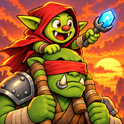
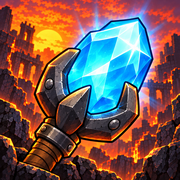
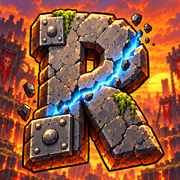
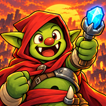
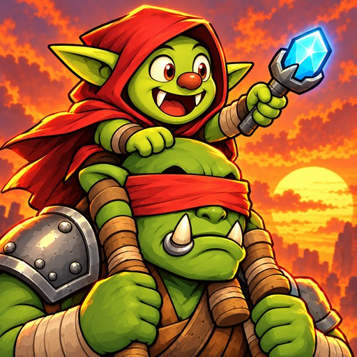
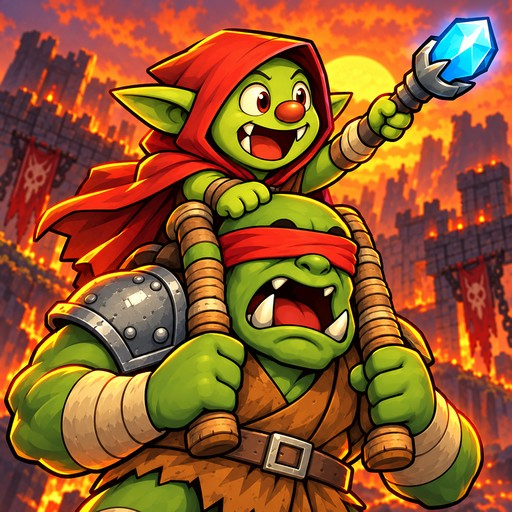

Cinq icônes, à la vraie taille d'un écran d'accueil d'iPhone (60 pt), puis en grand. Ma recommandation : 1. Réponds par numéro.

1
2
3
4La signature du jeu : on reconnaît Gorm (la capuche rouge, le sceptre) et Nib (le bandeau) même tout petits.

La plus lisible en petit : une seule forme, la magie des métaux.
Lisible, mais c'est une lettre : moins d'émotion.
Un seul visage, très lisible. Écart : en bas, la tête de Nib coupée se lit comme une défense sur le ventre de Gorm (à retoucher si tu la prends).
Le même cadrage que 1, plus d'action, un peu plus chargé.
